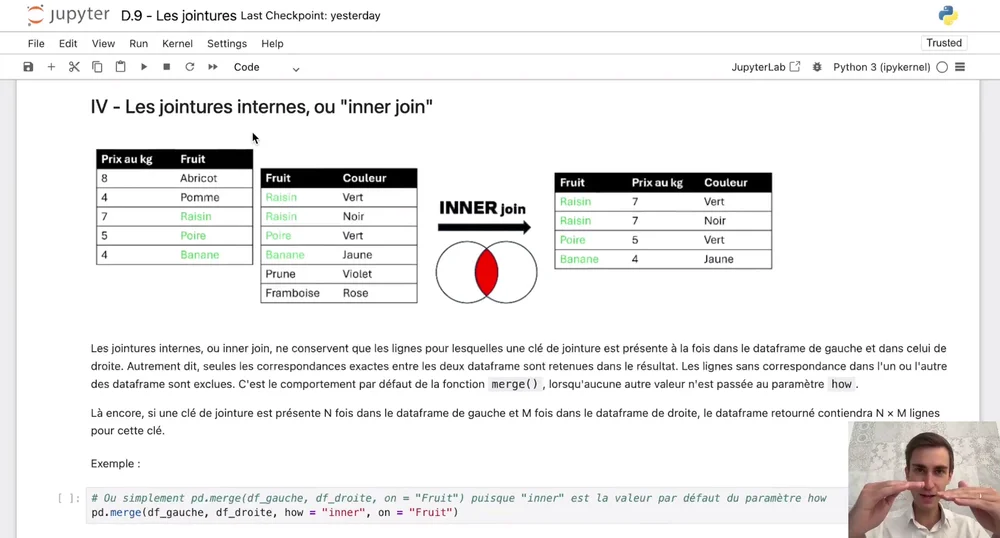

Gagnez en temps et en possibilités sur vos traitements de données et vos automatisations, en tant que professionnel métier, avec une réelle compréhension de ce que vous faites.
La formation Python pensée pour les profils métiers analytiques, et créée par l'un d'entre eux. Aucun prérequis en programmation.
L'IA introduit une rupture sans précédent pour l'analytique en entreprise : la barrière technique qui tenait les métiers à l'écart de la puissance et la polyvalence de Python est tombée. Ce qui était réservé aux profils tech est maintenant à la portée de ceux qui comprennent le mieux la donnée : vous.
Vibe-coder, c'est déjà très bien. Mais sans maîtrise, c'est se soumettre à un résultat que vous ne pouvez ni vérifier, ni faire facilement évoluer. Cette formation vous rend apte à lire un script que l'IA génère, à repérer une erreur, et à adapter un script à vos propres données, pour être véritablement garant de vos productions.
L'analyse de données et les automatisations sont en train de migrer côté métier. La barrière technique qui les avait longtemps cantonnés aux équipes tech étant levée, la priorité est devenue autre : les remettre dans les mains de ceux qui comprennent le mieux ce que la donnée doit produire. Les meilleurs profils analytiques maîtrisent déjà Python. Dans quelques années, ce sera aussi naturel pour un profil métier qu'Excel l'est aujourd'hui.
Python est le langage de référence le plus accessible pour manipuler des données et automatiser des traitements. L'IA le rend encore plus accessible. Décrire un besoin, obtenir un script, le comprendre, l'adapter : ce cycle est maintenant à la portée de tout profil analytique, sans passer par une équipe IT.
Une partie croissante des usages data et automatisation migre vers les métiers. Et leur maîtrise va devenir un différenciateur individuel pour les profils métiers analytiques : ceux qui sauront combiner leur expertise terrain et leur maîtrise technique tireront le mieux leur épingle du jeu. C'est précisément ce que cette formation vous permet de construire, avec Python.
Excel s'est imposé comme l'outil analytique par défaut des équipes métiers, y compris pour des usages qu'il n'a jamais été conçu pour supporter : fichiers de plusieurs centaines de milliers de lignes, traitements complexes, automatisations, croisements multi-sources. Les équipes métiers se sont alors tournées vers des solutions de contournement. Chacune avec ses mérites et ses propres limites.
Excel sature lorsqu'on lui demande de gérer des centaines de milliers de lignes ou des traitements complexes en chaîne. Il n'est pas fautif, simplement pas conçu pour.
Des tâches répétitives refaites à la main chaque semaine, sources d'erreurs et de temps perdu qui ne se récupère pas.
Rapprocher plusieurs fichiers de formats différents peut s'avérer être un véritable casse-tête là où un script Python offre une grande flexibilité.
VBA est lent, et Microsoft pousse vers d'autres solutions. Power Query et Power Pivot atteignent rapidement leurs limites sur des workflow complexes, compliquent la maintenabilité, et se limitent au requêtage. Fautes de bonnes pratiques, ces fichiers deviennent souvent illisibles.
Alteryx, Zapier et leurs équivalents reproduisent trop souvent à prix fort ce qu'un script Python ferait gratuitement. Ils sont mal documentés, peuvent provoquer des comportements inattendus, et sont bornés aux fonctionnalités prévues par l'éditeur.
Certains ont déjà pris le réflexe de demander un script Python à une IA. C'est un excellent point de départ. Mais sans comprendre ce que le script fait, impossible de vérifier qu'il est juste, de corriger une erreur, ou de l'adapter. On reste dépendant d'un outil qu'on ne maîtrise pas.
Python est l'outil idéal pour vos traitements de données, et c'est ce que cette formation vous apprend en priorité. Mais son périmètre va bien au-delà.
Avec un seul langage, gratuit, vous pouvez couvrir des besoins que vous adressez aujourd'hui avec une combinaison d'outils épars et coûteux : automatisation de process complets, envoi de mails, lecture et génération de PDF, graphiques interactifs avancés, interactions avec des APIs, et bien d'autres.
Ce que Power Query, Make, ou votre outil de marketing automation font séparément, avec leurs abonnements, leurs limites et leurs boîtes noires, Python permet d'en centraliser une grande partie, dans un même environnement flexible, avec une syntaxe que vous connaissez déjà.
Vous manipulez des données au quotidien et vous sentez que vos outils actuels vous freinent plus qu'ils ne vous aident.
Peut-être utilisez-vous VBA, Power Query, Power Pivot... Mais vous n'allez pas aussi vite et aussi loin que vous espérez.
Contrôle de gestion, business analysis, sales ops, marketing digital, risk, logistique, HR analytics… Vous êtes au cœur de la donnée mais vos outils ne suivent plus.
Pas juste copier-coller un script généré. Mais le comprendre, le challenger, l'adapter à votre contexte réel.
C'est exactement le point de départ de cette formation. Pas un obstacle : un point de départ.
Pas appliquer des recettes toutes faites, mais maîtriser vos traitements de bout en bout, pouvoir les faire évoluer et les transmettre grâce à des bonnes pratiques.
Automatiser complètement des process entiers, qui impliquent des extractions de données, des envois de mails, des génération de PDF...
Les formations Python qui existent sont presque toutes conçues pour des profils techniques : data scientists, data engineer, machine learning engineer... Elles supposent un environnement technique, une logique de programmation, et des objectifs qui n'ont rien à voir avec ceux d'un contrôleur de gestion ou d'un business analyst.
Cette formation part d'un principe différent. Vous avez déjà une compétence précieuse : votre compréhension business, votre connaissance de la donnée, votre sens des résultats. Python est l'outil qui vous permet de l'exploiter pleinement. La formation est construite autour de cas concrets issus du quotidien des équipes métiers, adaptés à leur environnement, avec un vocabulaire et une pédagogie adaptés.
Pas de théorie abstraite. Pas d'apprentissage non réplicable. Une progression pensée pour vous permettre de prendre en main Python comme un outil métier, et qui s'insère dans votre quotidien.
Excel reste irremplaçable pour ce qu'il fait le mieux : explorer, présenter et partager vos données. C'est là qu'il excelle, et cette formation le valorise en tant que tel.
Python entre en jeu pour tout ce qui précède : nettoyer les sources brutes, croiser des fichiers de formats différents, automatiser les traitements récurrents, gérer les gros volumes. Et il vous rend vos résultats dans un fichier Excel propre, prêt à être partagé.
L'objectif est de mieux travailler avec la donnée. Plus vite, avec plus de fiabilité, et en pleine maîtrise de ce que vous produisez. Vous conservez Excel là où il est indispensable, et Python prend en charge ce qu'Excel ne sait pas faire.
Python et Excel ne s'opposent pas : ils se complètent. Chacun là où il est le plus efficace.
La formation est organisée en deux parcours complémentaires, afin de séparer distinctement ce qui est essentiel à tout profil métier, de ce qui n'est pertinent que pour certains contextes : un tronc commun à suivre dans l'ordre, fondamental pour tous, puis des modules indépendants, à choisir selon vos besoins.
Le socle indispensable pour tirer efficacement profit de Python dans son quotidien, en tant que métier. Chaque module prépare le suivant.
Installation de Python et de Jupyter Notebook, le support d'utilisation de Python adapté dans un contexte métier : accessible, structuré et facilement partageable en équipe. L'installation est guidée pas à pas, à l'écrit et en vidéo.
Pas de survol superficiel. Vous acquérez une vraie compréhension de ce que vous écrivez. Types, variables, boucles, fonctions... : vous assimilez les fondamentaux pour pouvoir comprendre et adapter n'importe quel script à votre contexte, y compris ceux générés par une IA.
Vous apprenez à nettoyer, transformer, filtrer, croiser et agréger vos fichiers de manière claire, efficace et maintenable, grâce à la librairie de référence Pandas. Chaque notion est ancrée dans un cas métier concret.
Structurer et documenter vos scripts pour qu'ils soient clairs, compréhensibles par votre équipe et maintenables dans le temps. Vous apprenez aussi à tirer au mieux profit d'une IA et à favoriser l'adoption de Python dans votre équipe.
Deux cas complets, inspirés de situations réelles, pour mobiliser toutes vos compétences et valider votre maîtrise de bout en bout, des fichiers bruts au livrable Excel prêt à être partagé.
Une fois le parcours principal complété, ces modules à la carte vous permettent d'aller plus loin dans ce que Python a à vous offrir. Chacun est indépendant : vous suivez ceux qui vous intéressent, dans l'ordre qui vous convient.
Produire des visualisations interactives et sur-mesure directement depuis vos données.
Automatiser l'envoi d'emails avec une présentation avancée et des pièces jointes.
Extraire et traiter automatiquement des données depuis des fichiers PDF.
Générer des rapports PDF structurés et mis en forme directement depuis Python.
Reproduire le comportement humain sur un navigateur pour automatiser des séries d'actions.
Récupérer des données de votre SaaS de paiement ou de votre CRM grâce aux APIs.
Prendre en main l'outil de la suite Google fait pour collaborer avec vos collègues sur vos scripts.
Tirer profit de GitHub, avec une approche sans terminal, pour planifier l'exécution de vos scripts et gérer des mots de passe.
La formation se suit en ligne, à votre rythme, depuis votre ordinateur. Vous avancez quand vous le souhaitez, en étant guidé par des supports riches et pensés pour que vous alliez pleinement au bout de votre montée en compétences : cours compréhensibles aboutissant à des exercices pratiques, vidéos explicatives, synthèses, liens avec les notions précédentes... Des sessions de coaching individuelles avec le formateur ainsi qu'un canal Discord privé vous permettent d'adresser toutes vos questions, et d'être accompagné jusqu'à l'application réelle de vos compétences dans votre environnement professionnel.
Tous les cours accessibles à tout moment, à vie. Vous progressez à votre rythme, et les vidéos qui accompagnent systématiquement les cours vous accompagnent dans votre apprentissage.

Extrait d'une vidéo de cours — vous êtes accompagné à l'écrit et à l'oral tout au long de votre apprentissage.
Une question sur un concept, un doute sur votre code, une hésitation sur votre compréhension ? Le Discord privé de la formation vous permet de poser vos questions à tout moment, pour ne jamais rester bloqué.
Pendant les 3 premiers mois d'accès à la formation, vous disposez de 3 séances de coaching d'une heure en tête-à-tête avec le formateur, pour approfondir le sujet de votre choix : une application de Python que vous souhaitez approfondir, vous conseiller dans vos premières productions, vous aider à convertir vos compétences en levier de progression professionnelle... Vous choisissez !
J'obtiens maintenant le même résultat en quelques minutes tout en étant plus serein […] Au-delà du gain de temps et de fiabilité, j'aime réellement coder en Python.
Je ne connaissais rien à la programmation. […] En fait, c'est bien moins compliqué qu'on peut le croire. […] Erwan est très pédagogue, […] et son coaching m'a beaucoup aidé à progresser.
Grâce à Python, j'arrive maintenant à traiter sans difficulté de gros volumes de données (plus d'un million de lignes), là où je peinais, ou ne parvenais pas, à arriver à mes fins avec VBA ou Power Query.
Cette formation se démarque très nettement des autres que j'ai pu suivre, tous domaines confondus, allez-y les yeux fermés.
J'ai toujours occupé un rôle analytique au sein d'équipes métiers, dans des contextes très variés - finance, risques, partenariats, opérations, RH - aussi bien en start-up, scale-up, grand groupe du CAC 40 et Big Four, en France comme à l'étranger.
Malgré la diversité de ces environnements, un constat est revenu systématiquement : des équipes talentueuses qui consacraient un temps et une énergie considérables à des tâches que Python aurait pu traiter fluidement et rapidement.
Quand j'ai commencé à intégrer Python à mon quotidien, ma façon de travailler a radicalement changé. J'ai arrêté de subir mes données. J'ai automatisé ce qui me prenait des heures. J'ai réellement pris du plaisir à manipuler mes données. Et j'ai pu aider d'autres profils analytiques autour de moi, qui ne se cantonnaient pourtant pas à Excel, mais qui atteignaient le plafond de leurs outils.
Puis l'arrivée de l'IA a ouvert encore plus de possibilités, pour tous : en rendant Python encore plus accessible pour les novices, et en permettant aux profils plus expérimentés plus d'ambitions. Avec un même dénominateur commun quel que soit le niveau : obtenir un script, puis le comprendre et le challenger. Car c'est précisément en comprenant Python qu'on tire vraiment parti de l'IA, plutôt que de se fier aveuglément à un résultat qui constitue souvent une très bonne base mais reste perfectible.
Cette formation est née de cette expérience du terrain. Elle a pour objectif de vous transmettre des compétences pragmatiques, directement applicables aux réalités des équipes métiers, et taillées pour une époque où programmer, grâce à l'IA, devient accessible à tous et de plus en plus incontournable.
Le prix affiché est le prix effectivement facturé, toutes taxes comprises lorsqu'applicables.
Vérifier la disponibilitéRejoignez la formation et transformez votre façon de travailler avec la donnée et d'automatiser, en tant que professionnel métier.
Accéder à la formation →